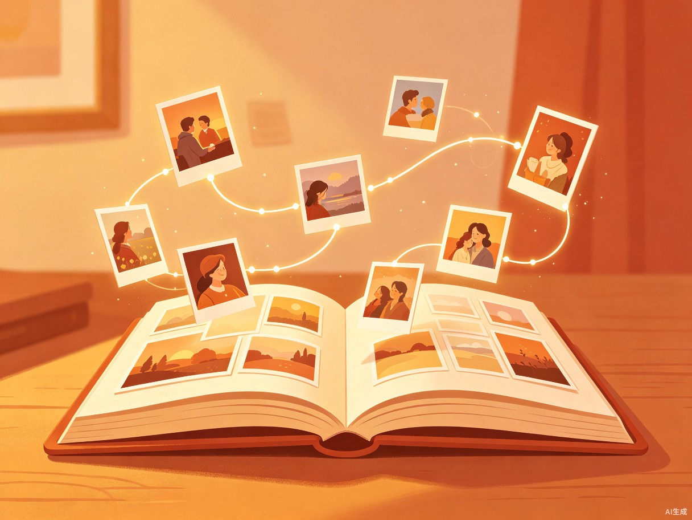
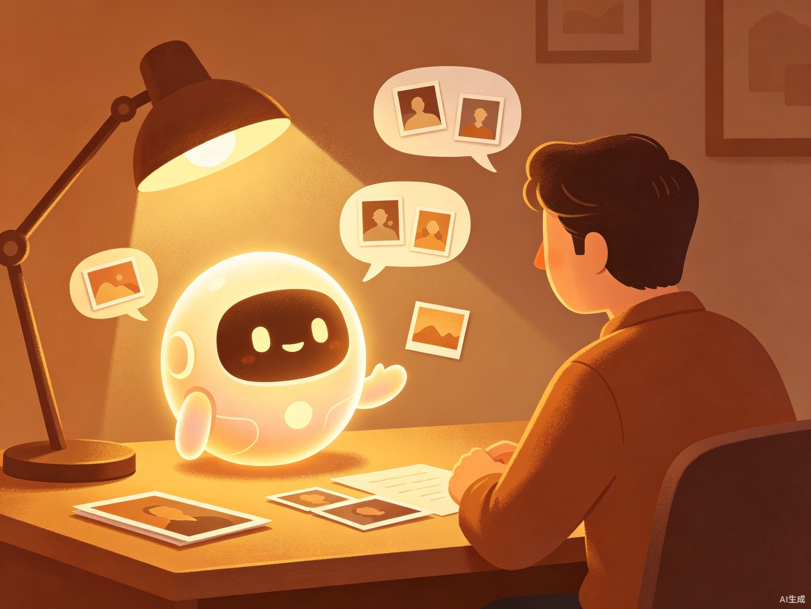
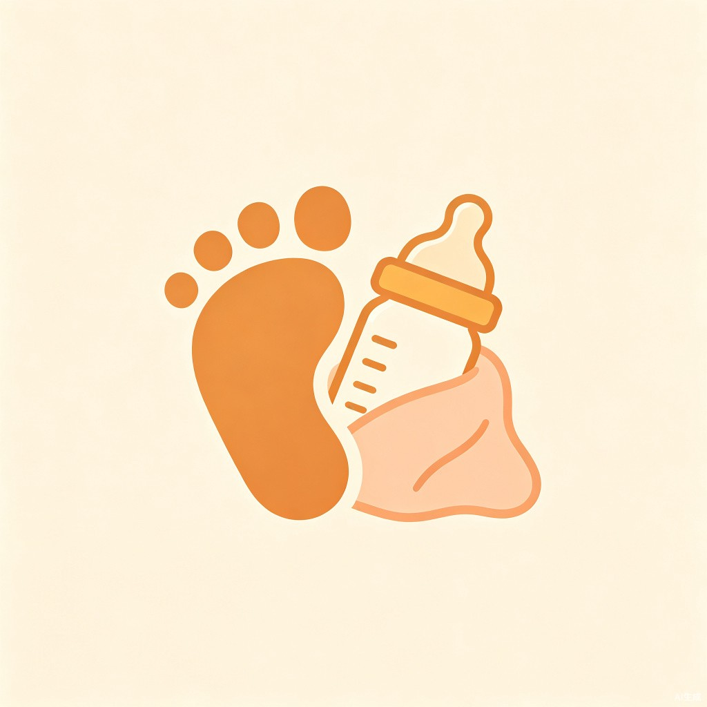

让沉睡在相册里的几千张照片，
被AI讲成有温度的故事。
手机里存了几千张照片、几百段视频，却从来没有时间整理。纪念日翻相册，翻了半小时也找不到那张想要的。那些珍贵的瞬间，就这么沉睡在硬盘里，慢慢被遗忘。
几千张照片散落在相册、微信、聊天记录里，手动分类太累，一拖再拖，最后干脆不看了。
手机相册按时间排列，像一本没有目录的书。想看"宝宝第一次走路"，得翻几百张才能找到。
照片是冷的，但故事是暖的。同样的画面，如果配上当时的心情和旁白，感觉完全不一样。
时光说书人用AI理解照片背后的故事——不只是识别人物和场景，更能挖掘照片之间的关联，把零散的瞬间串成有起承转合的叙事。
上传你的照片、视频、语音备忘录，甚至微信聊天截图
AI不只是分类，更读懂照片之间的联系
AI为你的回忆撰写专属旁白
生成可翻阅的电子编年册，或1分钟高光短片

AI自动把零散照片按"故事"组织，而不是简单按日期堆叠。
一键生成1分钟纪念短片，比你自己剪的还动人。

想问什么直接说，AI帮你从几千张照片里找答案。
把泛黄的老照片变成有温度的家族记忆。
苹果、华为、小米都有"回忆"功能，但它们做的是"配乐轮播"，我们做的是"讲故事"。
| 维度 | 传统相册回忆 | 时光说书人 |
|---|---|---|
| 核心能力 | 人脸识别 + 分类 + 配乐 | ✓ 语义理解 + 叙事创作 |
| 产出形态 | 照片轮播视频 | ✓ 有旁白的故事编年册 |
| 交互方式 | 被动浏览 | ✓ 主动对话问答 |
| 多源整合 | 仅手机相册 | ✓ 相册+微信+语音+老照片 |
| 情感温度 | ✗ 工具属性强 | ✓ 有温度的"说书人" |

手机里全是娃的照片，几千张却从来没整理过。想做成长册，但根本没时间。想给孩子留一份成长记忆，却有心无力。
想把一家人的回忆整理好，给老人看看、给孩子留着。但照片散落在全家人手机里，整合起来太麻烦了。
每次旅行拍几百张照片，回来就再也没翻过。想做旅行vlog但不会剪，朋友圈九宫格根本装不下回忆。
爸妈的老照片泛黄了，想保存下来。爷爷奶奶的故事没人讲，怕再过几年就忘了。想把家族记忆传下去。
把冷冰冰的照片变成有温度的故事，帮人们找回那些差点被遗忘的感动时刻。
手动整理几千张照片需要几十小时，AI几分钟搞定，还比人整理得更有"故事感"。
帮助家庭记录和传承记忆，让每一代人的故事都能被保存、被讲述、被听见。
每一张照片背后，都有一个值得被讲述的故事。